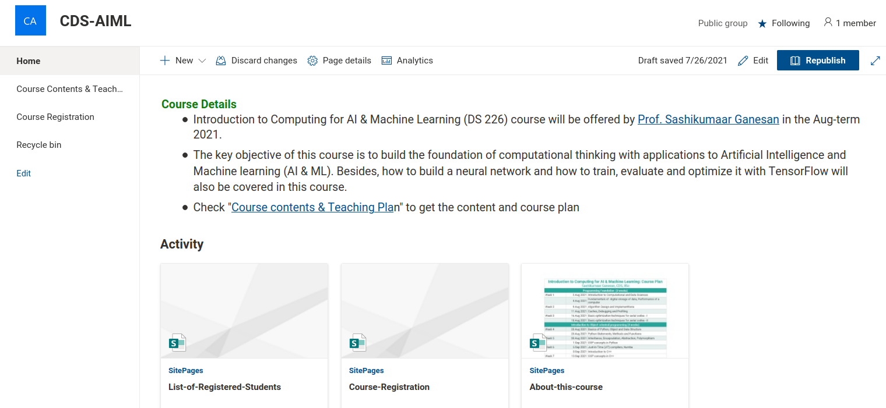

Faculty Member.
Data Scientist.
ML Engineer.
Founder, Zenteiq.
I'm a
Department of Computational and Data Sciences, IISc Bangalore.
About MeAbout Me
Know Me More
I'm Sashikumaar Ganesan
Associate Professor and Chair, Department of Computational and Data Sciences (CDS), Indian Institue of Science (IISc), Bangalore, India.
Founder, Zenteiq Edtech Pvt. Ltd., a deep tech start-up incubated at FSID, IISc.
Chair, Dept. of CDS, since Feb'18.
Co-Convenor, Kotak IISc AI-ML Centre, Dec'22 - Jun'23.
Chair, PCC, M.Tech. Data Science & Business Analytics, Nov'20 - Jun'23.
Programme Director, AP-CDS, since Jul'20.
Programme Director, AP-AI & MLOps, since Oct'22.
Faculty Associate, IMSc, IISc, since Jul'11.
My Research group, Scientific Machine Learning and Operations (STARS), focuses on Finite element analysis, Scientific Computing & Machine Learning and High-Performance Computing.
I joined IISc in 2011 as an Assistant Professor. Before joining the institute, I was a Research Associate at Imperial College London and an Alexander-von-Humboldt fellow at WIAS Berlin. I received my Ph.D. (Dr. rer. nat) in 2006 from Otto-von-Guericke University, Germany.
- Name: Prof. Sashikumaar Ganesan
- Email: sashi@iisc.ac.in
- Phone: (+91) 802 293 2902
- Address:
Department of Comptational & Data Sciences,
Indian Institute of Science, Bangalore.
Karnataka, India - 560012
15+
Years Experiance
25+
Students Guided
50++
Publications
650+
AI/ML Upskilled
Research
Interests
Computational Science
Finite element analysis, modeling of multiphase flows, fluid-structure interactions, turbulent flows, and epidemiological events. Hybrid CPU-GPU parallel algorithms, hardware-aware scalable parallel implementations.
Scientific Machine Learning (SciML)
ML for closure problems, Physics-informed neural networks (PINNs), AI-based estimation of uncertain model parameters, augmenting numerical schemes with data-driven approaches.
Data Science
Anomaly detection, Predictive behavior modeling, AI-based skill and performance assessments, personalized recommender systems, Fintech.
Machine Learning Operations (MLOps)
Scalable ML algorithms, Distributed training, Cloud computing, ML model and data version control, CI/CD pipeline, ML deployment, and operations.
Research
Publications
Book
|
S. Ganesan & L. Tobiska :
Finite Elements: Theory and Algorithms.
Cambridge University Press, 2017, ISBN: 9781108415705.
|
Journal Articles
Book Chapters
|
S. Ganesan, A. Hahn, K. Simon, L. Tobiska:
Finite Element Computations for Dynamic Liquid-Fluid Interfaces.
In: M. T. Rahni, M. Karbaschi and R. Miller, editors, Computational Methods for Complex Liquid-Fluid Interfaces, CRC Press, Taylor and Francis Group, (2015) Ch.16, Pages: 331--351, ISBN: 9781498722087 (online) |
|
S. Ganesan, B. Pal, S.Srivastava:
Simulation of two-phase flows with surfactants.
In: N. K. Gupta, A. V. Manzhirov, and R. Velmurugan, editor, Topical problems in theoretical and applied mechanics, Elite Publishing House Pvt. Ltd., (2013) Pages: 418 - 425, ISBN: 978-81-88901-55-5 |
|
S. Ganesan, Bhanu Teja:
A multi-level finite element discretization for efficient solution of multidimensional population balance system.
In: S. Sundar, editor, Advances in PDE Modeling and Computation, Ane Books Pvt. Ltd., (2013), Pages: 105 - 118 (online) |
|
S. Ganesan, S. Rajasekaran, L. Tobiska:
An ALE-based finite element method for the simulation of an impinging droplet on a hot surface.
In: S. Sundar, editor, Advances in PDE Modeling and Computation, Ane Books Pvt. Ltd., (2013), Pages: 35 - 53 (online) |
|
S. Ganesan, L. Tobiska:
Finite Element Simulation of an Impinging Liquid Droplet.
In: Albrecht Bertram and Jürgen Tomas, editor, Micro-Macro-
Interactions In Structured Media and Particle Systems, Springer,
(2008) (online) |
|
S. Ganesan, L. Tobiska:
A Finite Element Method for the Simulation of a Liquid Droplet Impinging on a Solid Surface.
In: Palle Jorgensen, Xiaoping Shen, Chi-Wang Shu and Ningning Yan, editor, RECENT ADVANCES IN COMPUTATIONAL SCIENCES, World Scientific, (2008)
(online) |
Teaching
Courses
AI & Machine Learning with Python: Jan-Apr 2023 Online CCE course
AI/ML is a CCE-PROFICIENCE semester long course aimed to upskill students, researchers & working professionals on Computational Thinking with applications to ML/AI and Data Science in a "Learn-by-Doing" approach. Live lectures will be conducted in the evenings so that regular students from other institutes/colleges and working professionals can participate without affecting their normal schedule.
Admissions open for Jan - Apr 2023 Term. Apply online!
Introduction to Computing for AI & Machine Learning, Jan - Apr 2023 Credits-3:1, DA 203o
This four-credit course will be offered every year in the Jan-April term as a core course to M.Tech. (Online) programme. This course is aimed at building the foundation of computational thinking with applications to Artificial Intelligence and Machine learning (AI & ML). Besides, how to build a neural network and how to train, evaluate and optimize it with TensorFlow will also be covered in this course.
Introduction to Computing for AI & Machine Learning, Aug 2022 (2:1), DS 226
".”
HPCDS:: High-Performance Computing and Data Science (Online CCE course) Aug 21
HPCDS is a CCE-PROFICIENCE semester long course aimed at students, researchers, and professionals working on computational modeling or Data science applications who wish to upskill. This course will be organized during evening hours so that regular students from other institutes/colleges and working professionals can participate without affecting their normal schedule.
Consultancy
Projects
Shell India
Large Scale Simultion augmented by AI. This shell industrial project aims to develop a real-time environment-aware simulation of a wind turbine farm through combination of techniques in Deep Learning, Model Order Reduction and High-Performance Computing.
ITC Limited
Confidential.
Indo-German Partnership Program
The purpose of this four-year program (2020 - 2024) is to foster hardware-aware numerical schemes and scalable algorithms to harness future multi-node, multi-GPU supercomputers. The key focus is not only developing hardware-aware algorithms but to train young researchers in scientific computing through joint supervision, workshops, summer/winter schools.
Confidential.
Social
Impacts